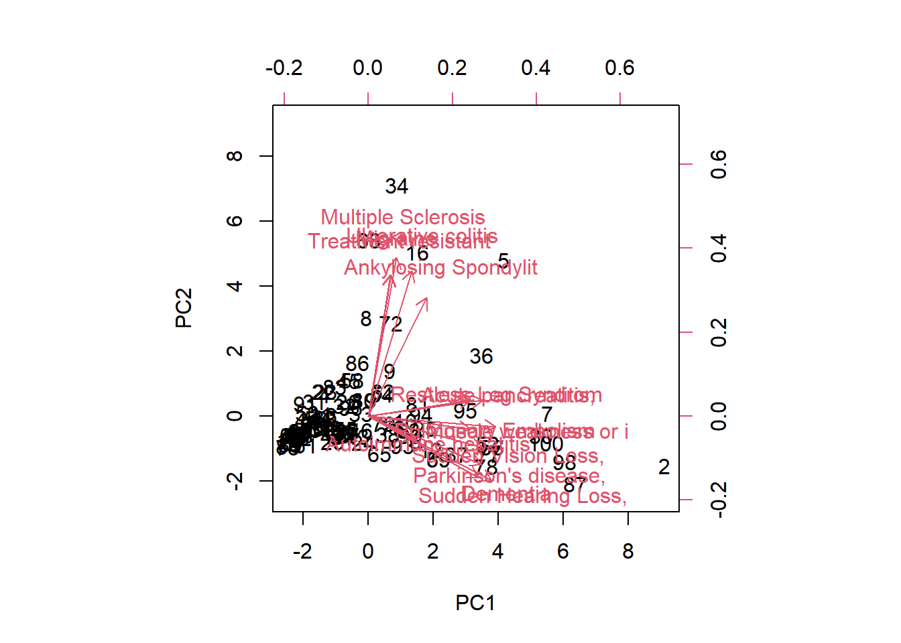

Code
patient_risk_profiles |>
visdat::vis_dat() +
theme(axis.text.x = element_text(angle = 90,
size = 4),
legend.position = "bottom")Looking at the Jenna Rep’s curated data-set of Patient Risk Profiles as a part of #TidyTuesday Week 43 (Oct 23, 2023)
In celebration of the virtual R/Pharma Conference, we delve into the fascinating realm of Patient Risk Profiles. Thanks to the dedicated work of Jenna Reps, we have at our disposal a dataset encompassing the medical history features of 100 simulated patients, along with the predicted 1-year risk of 14 distinct outcomes derived from each patient’s unique medical history.
With a keen eye for exploration and a flair for data visualization, we have harnessed the power of the R programming language to unveil Interesting Relations between the different ailments (outcomes) within this dataset, ultimately culminating in the creation of an interactive visualization based on a random forests model. Join us on this data-driven journey as we unlock the secrets concealed within patient risk profiles.
The data is completely numerical, and there are no missing values. So it seems good for creating statistical learning models.
patient_risk_profiles |>
visdat::vis_dat() +
theme(axis.text.x = element_text(angle = 90,
size = 4),
legend.position = "bottom")Upon exploration, it seems that the data has mainly these columns:
personID
Age groups
Sex
Presence / Absence of many different risk factors as binary variables
Risk of many outcomes as decimals (between 0 and 1)
Lets us improve the age groups and sex columns to make them into 1 column each. This will allow us to use age as an ordinal variable; or even the mid-point age in developing models.
# Assign the result of a series of data manipulation operations to the 'prf' variable.
prf <- patient_risk_profiles |>
# Select columns: 'personId,' names starting with "age group" and "Sex"
# select(personId, starts_with("age group"), starts_with("Sex")) |>
# Reshape the data to long format for columns starting with "age group."
pivot_longer(cols = starts_with("age group"),
names_to = "age_group",
values_to = "age_value",
names_prefix = "age group: ") |>
# Filter out rows where 'age_value' is not equal to 0.
filter(age_value != 0) |>
# Reshape the data to long format for columns starting with "Sex."
pivot_longer(cols = starts_with("Sex"),
names_to = "gender",
values_to = "sex_value",
names_prefix = "Sex = ") |>
# Filter out rows where 'sex_value' is not equal to 0.
filter(sex_value != 0) |>
# Select all columns except 'sex_value' and 'age_value.'
select(-c(sex_value, age_value)) |>
# Reorder the columns with 'age_group' and 'gender' after 'personId.'
relocate(age_group, gender, .after = personId)
# Creating levels of the age group to make it an ordinal variable
levels_age <- prf |>
distinct(age_group) |>
separate_wider_delim(cols = age_group,
delim = " - ",
names = c("age_lower", NA),
cols_remove = FALSE) |>
mutate(age_lower = parse_number(age_lower)) |>
arrange(age_lower) |>
pull(age_group)
# Adding levels of factor to age group
prf <- prf |>
mutate(age_group = fct(age_group, levels = levels_age))
# Removing double observations for persons with sex male and female both
gend_rm <- patient_risk_profiles |>
filter(`Sex = FEMALE` == 1 & `Sex = MALE` == 1) |>
pull(personId)
prf <- prf |>
mutate(gender = if_else(personId %in% gend_rm,
"MIXED",
gender)) |>
filter(!duplicated(personId))prf |>
ggplot(aes(y = age_group)) +
geom_bar() +
theme_minimal() +
labs(title = "Distribution of age-groups in the data set shows no particular pattern",
y = NULL, x = "Number of persons in the data set") +
theme(plot.title.position = "plot")Now, lets focus on outcomes to visually check correlations amongst them. We can see there are total 14 different outcomes which are “predicted” in this data-set. An interactive heat-map using heatmaply package with a dendrogram to classify groups of outcomes: –
colnames_prf1 <- prf |>
select(starts_with("predicted")) |>
colnames() |>
as_tibble() |>
mutate(small = str_remove(value, "predicted risk of "),
smaller = str_sub(small, start = 1, end = 20))
prf1 <- prf |>
select(starts_with("predicted"))
colnames(prf1) <- colnames_prf1$smaller
prf1 |>
as.data.frame() |>
cor() |>
heatmaply::heatmaply_cor()We can see that there are two groups of outcomes, one in bottom-left (very strong correlations) and other small group at top-right (less stronger correlations). Lets keep that in mind as we come to it later.
Lets also try principal components analysis to see if there exist groups of outcomes within the 100 simulated patients in terms of their outcomes: –
pc1 <- prf1 |>
as.matrix() |>
prcomp(scale = TRUE)
biplot(pc1, scale = 0)
As we can see in the bivariate plot, the predicted conditions (in red arrows) are clustered along two directions. This, sort of, reinforces out view formed earlier from the heatmap that there are, broadly, two groups of outcomes.
Listing the predictors present in the data set: there are 64 of them !
prf |>
select(!starts_with("predicted"),
-c(personId, age_group, gender)) |>
colnames() |>
as_tibble() |>
rename(`Variables` = value) |>
gt::gt() |> gt::opt_interactive(page_size_default = 5) |>
gt::tab_header(title = "List of risk factors in the data set")And, the correlations between different risk factors using an interactive heat-map: –
# Selecting the predictors alone
prf2 <- prf |>
select(!starts_with("predicted"),
-c(personId, age_group, gender))
# Creating a tibble of their full names, small and
# smaller names
colnames_prf2 <- colnames(prf2) |>
as_tibble() |>
mutate(
small = value |>
str_remove(" in prior year") |>
str_remove("Occurrence of ") |>
str_remove("Antibiotics ") |>
str_to_title(),
smaller = value |>
str_remove(" in prior year") |>
str_remove("Occurrence of ") |>
str_remove("Antibiotics ") |>
str_sub(start = 1, end = 15) |>
str_to_title()
)
# Easy names to display in correlation matrix
colnames(prf2) <- colnames_prf2$smaller
prf2 |>
as_data_frame() |>
cor() |>
heatmaply::heatmaply_cor(fontsize_row = 4,
fontsize_col = 4)As we can see, no specific patterns stand out amongst predictors. A few moderately positive correlations seem to be ones of disease - medicine. For example, Urinary Tract Infections are treated by Spreptogramins. Hence, both appear together.
Trying out Variable Importance Plots and Random Forests to select best predictors
Planned steps
Find top predictors for each outcome and also save their %IncMSE
Combine predictor importance for each outcome into a final tibble
Create a stacked bar chart for all these predictors
Make it interactive with plotly
# Loading random Forest library
library(randomForest)
# Setting a seed for reproducability of results
set.seed(1)
# cleaning out names of all risk factors and outcomes for easy
# construction of formulas in for loops
prftemp <- prf |>
clean_names()
# An empty tibble to fill in the data
risk_factors <- tibble(
outcome_variable = NA,
risk_factors = NA,
percentage_increase_in_MSE = NA
)
# Repeating the following loop for all outcomes
for (i in 68:81) {
# Finding the i'th outcome variable
var_num = i
# Name of the outcome - condition
output_var = names(prftemp)[var_num]
# A vector of all risk factors
input_var = str_flatten(names(prftemp)[2:67], collapse = " + ")
# Creating a formula to use in Random Forest
modelformula = formula(paste0(output_var, " ~ ", input_var))
# RandomForest model created
model <- randomForest(formula = modelformula,
data = prftemp,
importance = TRUE)
# Adding risk factors and their importance to final tibbe to plot
risk_factors <- bind_rows(
risk_factors,
as_tibble(
data.frame(risk_factors = rownames(importance(model)),
importance(model),
outcome_variable = output_var)
) |>
rename(percentage_increase_in_MSE = `X.IncMSE`) |>
select(-IncNodePurity) |>
relocate(outcome_variable) |>
arrange(desc(percentage_increase_in_MSE))
)
}Now, plotting the results in a nice static ggplot2 graph: –
# Writing a nice caption for the plot
plot_caption <- expression(paste(
italic("#TidyTuesday"),
". Data: Simulated Patient Risk Profiles by Jenna Reps.",
italic("Graphics: Aditya Dahiya")))
risk_factors |>
drop_na() |>
mutate(
outcome_variable = str_remove(outcome_variable,
"predicted_risk_of_"),
outcome_variable = to_title_case(outcome_variable),
risk_factors = to_sentence_case(risk_factors),
outcome_variable = str_remove(outcome_variable, " with"),
outcome_variable = str_remove(outcome_variable, " Trd")
) |>
separate_wider_delim(cols = outcome_variable,
delim = " No ",
names = c("outcome_variable", NA),
too_few = "align_start") |>
separate_wider_delim(cols = outcome_variable,
delim = " or 2 Nd ",
names = c("outcome_variable", NA),
too_few = "align_start") |>
filter(percentage_increase_in_MSE > 5) |>
group_by(outcome_variable) |>
mutate(reorder_var = sum(percentage_increase_in_MSE)) |>
ungroup() |>
ggplot(aes(y = reorder(outcome_variable, reorder_var),
x = percentage_increase_in_MSE,
fill = risk_factors)) +
geom_bar(stat = "identity",
position = position_stack(reverse = TRUE)) +
labs(x = "Importance of a risk factor in predicting the condition\n(Percentage increase in MSE explained by the risk factor)",
y = NULL,
title = "Age is the most important risk factor associated with 8 out of 13 conditions",
subtitle = "Using RandomForests we find importance of each risk factor in predicting the 13 ailments in the dataset.\nThe graph shows important (more than 5% increase in MSE) risk factors for predicting each ailment",
caption = plot_caption,
fill = NULL) +
scale_fill_brewer(palette = "Set3") +
theme_minimal() +
theme(axis.line = element_blank(),
axis.ticks.y = element_blank(),
panel.grid = element_blank(),
plot.title.position = "plot",
legend.position = "bottom")
A static graph can only show so few risk factor to avoid overcrowding. Lets look at an interactive graph now using ggplotly() to display all the risk factors: –
library(plotly)
plotly::ggplotly(
risk_factors |>
drop_na() |>
mutate(
outcome_variable = str_remove(outcome_variable,
"predicted_risk_of_"),
outcome_variable = to_title_case(outcome_variable),
risk_factors = to_sentence_case(risk_factors),
outcome_variable = str_remove(outcome_variable, " with"),
outcome_variable = str_remove(outcome_variable, " Trd")
) |>
separate_wider_delim(cols = outcome_variable,
delim = " No ",
names = c("outcome_variable", NA),
too_few = "align_start") |>
separate_wider_delim(cols = outcome_variable,
delim = " or 2 Nd ",
names = c("outcome_variable", NA),
too_few = "align_start") |>
group_by(outcome_variable) |>
mutate(reorder_var = sum(percentage_increase_in_MSE),
percentage_increase_in_MSE = round(percentage_increase_in_MSE, 1)) |>
ungroup() |>
filter(percentage_increase_in_MSE > 0) |>
janitor::clean_names(case = "title") |>
ggplot(aes(y = reorder(`Outcome Variable`, `Reorder Var`),
x = `Percentage Increase in Mse`,
fill = `Risk Factors`)) +
geom_bar(stat = "identity",
position = position_stack(reverse = TRUE),
col = "white") +
labs(x = "Importance of a risk factor in predicting the condition\n(Percentage increase in MSE explained by the risk factor)",
y = NULL,
title = "Age is the most important risk factor for most ailments",
subtitle = "Using RandomForests we find importance of each risk factor in predicting the 13 ailments in the dataset.\nThe graph shows important (more than 5% increase in MSE) risk factors for predicting each ailment",
fill = NULL) +
scale_x_continuous(limits = c(0, 100)) +
theme_minimal() +
theme(axis.line = element_blank(),
axis.ticks.y = element_blank(),
panel.grid = element_blank(),
plot.title.position = "plot",
legend.position = "none"),
tooltip = c("fill", "x")
)Trying to create and embed an interactive visualization from observable, with data wrangling in R: –
Another better interactive visualization with highlighting feature across ailments using datawrapper.de . However, I am unable to add tool-tips to this interactive visualization: –

Now, since we know that age is such a dominant risk factor, lets remove it and see the other most important risk factor in an interactive visualization with plotly: –
ggplotly(
risk_factors |>
drop_na() |>
mutate(
outcome_variable = str_remove(outcome_variable,
"predicted_risk_of_"),
outcome_variable = to_title_case(outcome_variable),
risk_factors = to_sentence_case(risk_factors),
outcome_variable = str_remove(outcome_variable, " with"),
outcome_variable = str_remove(outcome_variable, " Trd")
) |>
separate_wider_delim(cols = outcome_variable,
delim = " No ",
names = c("outcome_variable", NA),
too_few = "align_start") |>
separate_wider_delim(cols = outcome_variable,
delim = " or 2 Nd ",
names = c("outcome_variable", NA),
too_few = "align_start") |>
group_by(outcome_variable) |>
mutate(reorder_var = sum(percentage_increase_in_MSE)) |>
ungroup() |>
filter(percentage_increase_in_MSE > 0) |>
filter(risk_factors != "Age group") |>
janitor::clean_names(case = "title") |>
ggplot(aes(y = reorder(`Outcome Variable`, `Reorder Var`),
x = `Percentage Increase in Mse`,
fill = `Risk Factors`)) +
geom_bar(stat = "identity",
position = position_stack(reverse = TRUE),
col = "white") +
labs(x = "Importance of a risk factor in predicting the condition\n(Percentage increase in MSE explained by the risk factor)",
y = NULL,
title = "Role of other risk factors (removing age)",
fill = NULL) +
scale_x_continuous(limits = c(0, 100)) +
scale_fill_viridis_d() +
theme_minimal() +
theme(axis.line = element_blank(),
axis.ticks.y = element_blank(),
panel.grid = element_blank(),
plot.title.position = "plot",
legend.position = "none")
,
tooltip = c("fill", "x")
)